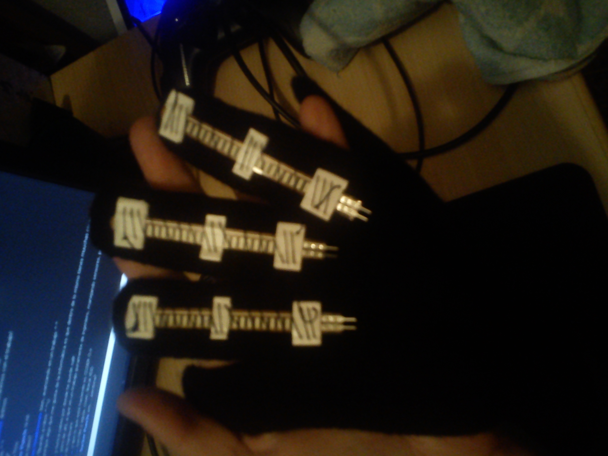
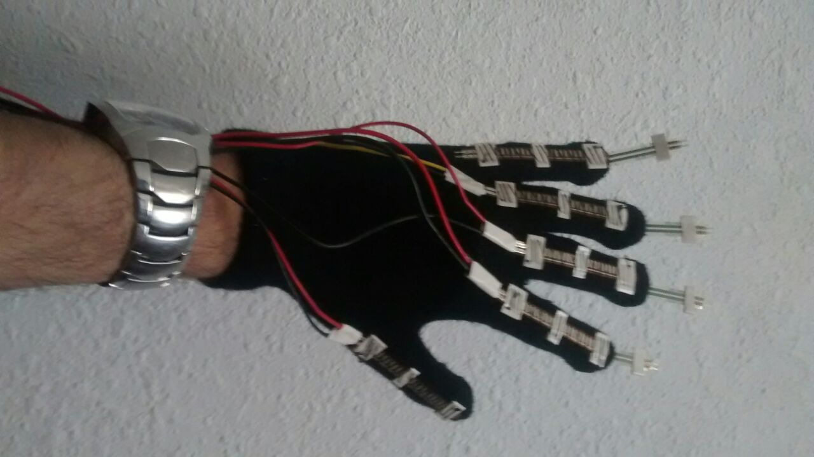
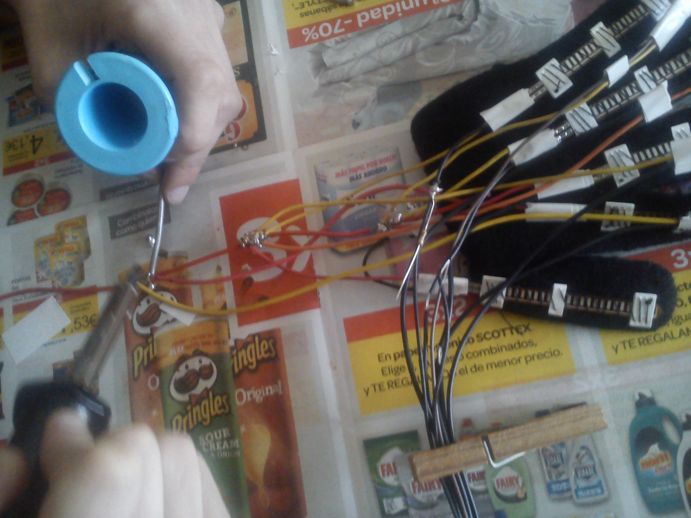
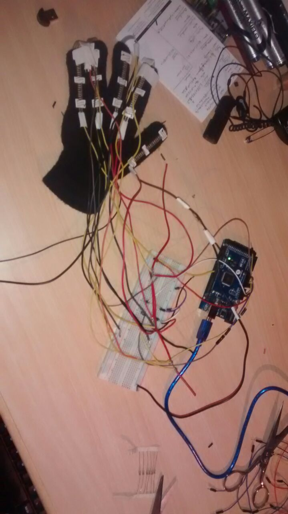

Betaglo
This project consist of an human interface with the computer. A glove let us to control the mouse, writing with the keyboard and execute some predefined commands.
Making Betaglo
First of all, we needed a gloves, wires and some sensors (flexors and pressure sensors). An arduino with a bluetooth module and a computer with linux to control. In our case, flexors of 7cm and pressure of 2cm of diameter. After the test, we think flexors of 11cm and pressure with less diameter will work better. Also we used a raspberry as a computer to control and an Arduino Atmega 2560.
Sewing the sensors to the glove, we used some tape to help us. 
The circuit is based on the next diagram, one wire to 5V and another wire with two branchs, one with a resistance to mass and another to an input of arduino. All the wires to the same destiny, was soldered in the same wire (mass and 5V). We used some tape to gather up al lthe wires to have a better look.   
Our glove suck because we have to unsolder and solder it again because of a mistake (the way it looked the first time... so beautiful)

Coding Betaglo
Simples lines of code. Pairing the bluetooth device and the computer is needed. The computer needs to install the library python-serial and xdotool. In the code, we set three states of the hand, mouse mode, keyboard mode and command mode
If you fell confident with spanish, check the pdf we made as a class work with more details: Pdf with process and specifications. Of course, with removed parts to respect our privacy and other details not related.
We considered the below:
- index finger = A
- middle finger = B
- ring finger = C
- pinky = D
mouse mode
flexors:
- A -> move down
- B -> move up
- C -> move left
- D -> move right
pressure:
- A normal -> click
- A strong -> hold click
- B normal -> right click
- B strong -> release click
- C normal -> Ctrl+C
- C strong -> change to command's state
- D normal -> Ctrl+V
- D strong -> change to keyboard's state
command mode
flexor not operative
- A normal -> Ctrl+z
- B normal -> browser (epiphany, installed in raspbian)
- C strong -> come back to mouse's state
keyboard mode
flexor not operative
Strong click change the keyboard's state
- A -> symbols' keyboard
- B -> change between lowercase and uppercase in normal keyboard state. From another state, change to letters' keyboard
- C -> numbers' keyboard
- D -> come back to mouse's state
| A normal | B normal | C normal | D normal |
|---|---|---|---|
| S | O | A | E |
| D | I | N | R |
| U | T | C | L |
| G | B | P | M |
| H | Q | Y | V |
| Ñ | J | Z | F |
| K | W | X |
| A normal | B normal | C normal | D normal |
|---|---|---|---|
| 1 | 2 | 3 | 4 |
| 5 | 6 | 7 | 8 |
| 9 | 0 |
| A normal | B normal | C normal | D normal |
|---|---|---|---|
| Space | . | , | Enter |
| ! | ? | ( | Delete |
| ) | ¡ | ¿ | " |
| : | ; | ' |